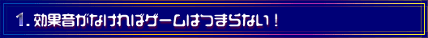
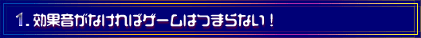

|  |
● ● ●
|  |
| ------------------------------------------------------------------------- |
| −−車の音などは本物を録音に行ったりするんですか。 |
| 阪東 しますね。そういう特徴のある音に関しては、録音します。トントンと鳴る音とかだったら、人工的に作った音のほうがよかったりしますけど。 |
| −−パソコンの中に、音のライブラリ※がすごくいっぱいあるんじゃないですか。 |
| 阪東 ありますよ。その都度、ゲームごとに分類しています。新しいゲームを作る時に、過去のライブラリから引っ張ってきたりもしますね。 |
| −−スタートボタンや決定ボタンを押した時の音も、ゲームによって全然違うんでしょうか。 |
| 近藤 僕はわりと同じようなものを使っていましたけど（笑）。 稲垣 僕はほかに曲を作っているわけではないので、メロディをつけられるのが唯一ボタンを押した時の音なんです。ですから、自己主張的にたくさん派手なものを作るんですけど、よく鳴らす音なので結局「うるさい」と言って、シンプルなものに変えられてしまうんです（笑）。 |
| −−「決定」の時の音も、ゲームによって違うんですか。 |
| 稲垣 ええ。ある程度、イメージは統一されていますけどね。「決定」の時は明るいイメージで、タララランと上がるようなフレーズになって、「キャンセル」がボロロロンと下がるイメージとか。また、カーソルを送る時には抽象的なポロロンというイメージとか。 |
| −−そういうことはどこで学ぶんですか。みなさん、入社したばかりの時というのは、経験が全然ないですよね。 |
| 阪東 必然的に覚えていくんですよ。あとは、やっぱりゲームが好きな人ばかりなので、どこでどんなふうに音が鳴るかというのはゲームで覚えていますよね。 |
| −−ほかのゲームの効果音を聞いて研究したりするんですか。 |
| 稲垣 ゲームでゲームを学ぶのは昔からよくないと言われていますので、そういう意味では参考にはしますけど、映画などほかのメディアの影響もあると思います。 阪東 特にアニメ系は参考になりますね。もちろん、そのままゲームに使えるわけじゃないですけど。 |
| ※ライブラリ＝素材、波形の集まりのこと。 |